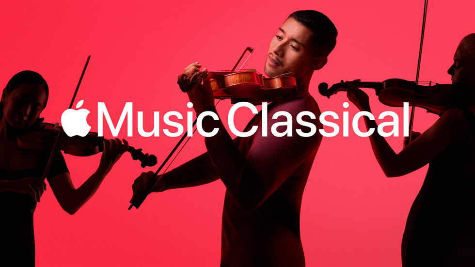
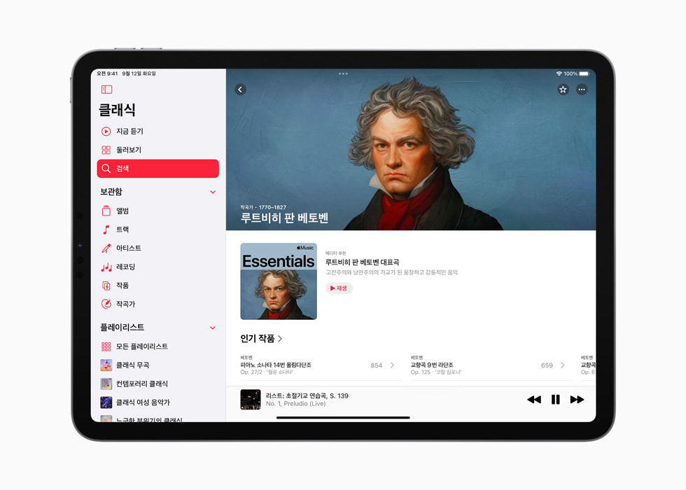
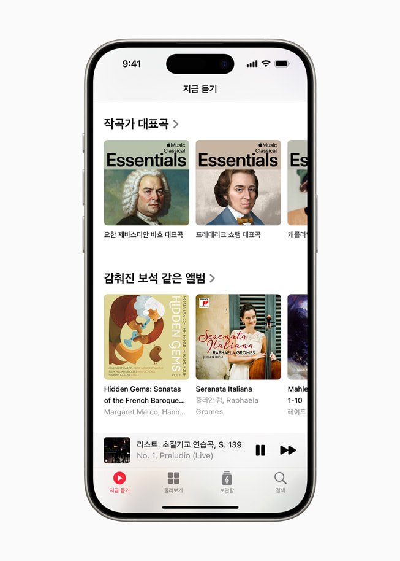
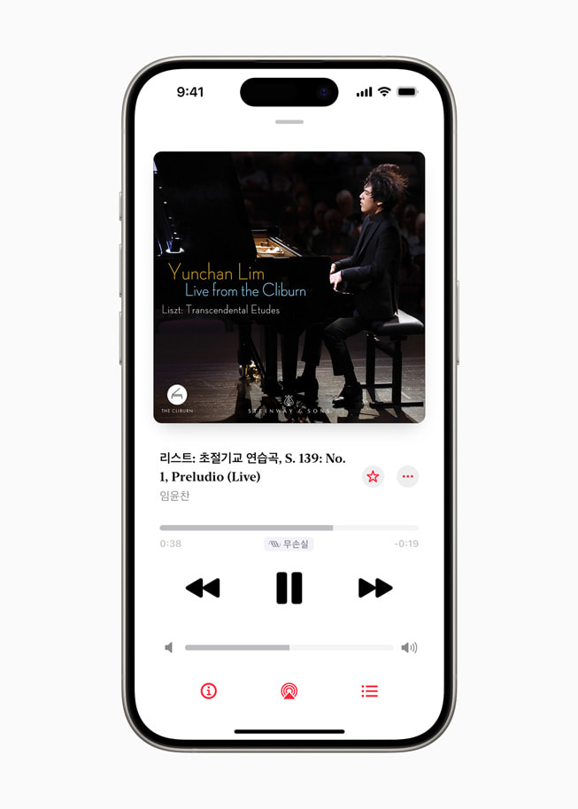
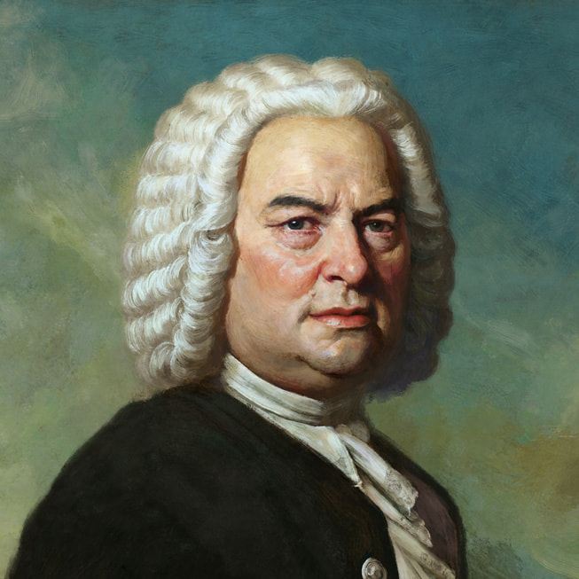
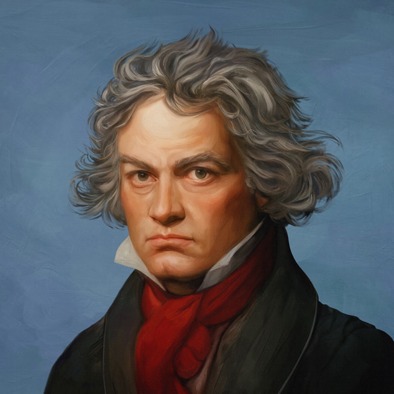

Apple Music Classical 한국 출시
임윤찬, 손열음, 조성진 협업 아티스트로 선정
예술의전당, 롯데콘서트홀, 통영국제음악제와 파트너십 체결
클래식 음악에 특화한 별도 앱인 Apple Music Classical이 한국에 출시됐습니다. 오늘부터 Apple Music 구독자들은 추가 비용 없이 기존의 구독권으로 Apple Music Classical 앱을 다운로드하고 즐길 수 있습니다.
Apple Music Classical 은 최적화된 검색 기능을 갖춘 세계 최대 규모의 클래식 음악 카탈로그에서 쉽고 빠른 레코딩 검색 기능을 제공합니다. 청취자들은 최고 수준의 음향으로 음악을 감상할 수 있으며, 몰입감 넘치는 공간 음향을 통해 평소에 즐겨 듣는 클래식 명곡을 전혀 새로운 방식으로 경험할 수 있습니다. Apple Music Classical 과 Apple Music의 만남은 클래식 음악 팬부터 입문자까지 모두에게 완벽한 음악 감상 경험을 선사합니다.
Apple Music Classical 은 수백 개의 엄선된 플레이리스트, 수천 개의 독점 레코딩, 깊이 있는 작곡가 소개, 주요 작품 소개, 직관적인 브라우즈 기능 등으로 궁극의 클래식 감상 경험을 제공합니다.

Apple Music Classical은 다음을 제공합니다.
- 신보부터 명작에 이르기까지, 500만 개 이상의 트랙 및 작품을 보유한 세계 최대 규모의 클래식 음악 카탈로그
- 작곡가, 작품, 지휘자, 악기, 시대, 오케스트라 또는 합창단으로 분류된 둘러보기와 검색을 통해 특정 레코딩을 즉시 찾아주는 기능
- 완전하고 정확한 메타데이터로 어떤 아티스트가 어떤 작품을 연주하고 있는지 알려주는 클래식 음악을 위한 인터페이스
- 수천 개의 레코딩을 몰입감 넘치는 공간 음향과 함께, 최고 음질(최대 192kHz/24비트 고해상도 무손실)로 감상 가능
- 수천 개의 독점 레코딩
- 작곡가 소개, 중요 작품의 설명 등이 들어 있는 수천 개의 에디터 노트
Apple Music Classical 출시 인터뷰
Apple의 Apple Music 및 Beats 담당 부사장인 올리버 슈서(Oliver Schusser)는 “우리가 하는 모든 일은 음악을 향한 깊은 사랑에서 비롯된다”며, “클래식은 모든 장르의 음악에 기반이 돼주지만, 지금까지는 아티스트와 팬들이 마음 놓고 즐길 수 있는 훌륭한 스트리밍 서비스가 전무했습니다. 세계 최대의 클래식 음악 셀렉션과 최고의 검색 및 브라우즈 기능, 공간 음향을 활용한 최고의 프리미엄 청취 경험, 세계 탑 아티스트들이 참여한 수천 개의 독점 레코딩 등을 갖춘 Apple Music Classical 앱이 그러한 문제를 해결해주리라 믿습니다. 이 앱을 출시하게 돼 무척 뿌듯하고, 오늘부터 전 세계의 더 많은 청취자를 만날 수 있어서 기대됩니다.”라고 말했습니다.
임윤찬은 “Apple Music Classical은 이 세상의 수많은 음악 중 미처 존재하는지조차 몰랐던 숨겨진 음반으로 나를 이끌어준다”며, “특히 앨범 커버와 트랙리스트를 자유롭게 골라, 마치 내 앨범을 만들듯이 플레이리스트를 만들 수 있습니다는 점이 정말 좋다. Apple Music Classical 이 자랑하는 세계 최고 수준의 음질과 방대한 음악 카탈로그 덕분에 가능한, 내가 가장 좋아하는 취미이자 행복의 원천이다. 나는 음악을 들을 때, 삶에서 한 번도 경험하지 못한 것들을 느껴보고 싶다. 음악을 통해 우리는 산 정상에 부는 바람을 상상해 보고, 꽃이 피는 소리도 듣고, 아름다운 사람과 함께 산책도 할 수 있습니다. 무엇보다도 음악은 우리를 꿈꾸게 합니다. 음악은 경계를 초월하여 사람을 연결하는 힘을 가지고 있기에, 음악으로 말합니다면 모두가 이해할 수 있습니다. 나는 이러한 메시지를 내 음악을 통해 전하고자 하며, Apple Music Classical 이 있기에 가능하리라 생각합니다. Apple Music Classical 과 함께 전 세계적으로 협업하고 내 음악적 꿈을 공유할 수 있게 되어 매우 자랑스럽다”고 전했습니다.
Apple은 많은 작품을 배출하는 전 세계의 클래식 음악 아티스트, 유명 클래식 음악 기관과 긴밀히 협업해 Apple Music Classical 출시 이후부터 청취자들에게 새롭고 독특한 독점 콘텐츠 및 레코딩을 제공합니다.
랑 랑(Lang Lang), 힐러리 한(Hilary Hahn) 등의 해외 아티스트에 더해, 피아니스트 임윤찬, 손열음, 조성진이 Apple Music Classical의 협업 아티스트 대열에 합류합니다.
또한 베를린 필하모닉, 카네기 홀, 시카고 심포니 오케스트라, 런던 심포니 오케스트라, 메트로폴리탄 오페라, 뉴욕 필하모닉, 파리 국립 오페라, 로열 콘세르트헤바우 오케스트라, 샌프란시스코 심포니, 빈 필하모닉 등의 내로라하는 기존의 파트너 국제 공연장 및 오케스트라에 더해, 예술의전당, 롯데콘서트홀, 통영국제음악제와도 파트너십을 체결했습니다.
앱에서는 임윤찬, 손열음, 정재일, 조성진이 엄선한 독점 플레이리스트, 손열음과 에스메 콰르텟 (Esmé Quartet)의 클래시컬 세션과 더불어, 협업 아티스트 및 파트너 기관의 독점 콘텐츠를 계속해서 제공할 예정입니다.
 
손열음은 “오래된 레코드 마니아로서, 또 1세대 iTunes 시절부터 Apple Music과 함께해 온 사용자로서, 이렇게 Apple Music Classical과 협업하게 되어 매우 설레고 기쁘다”며, “클래식 음악이 이전 시대의 음악이 아닌 오늘날 우리의 음악이 되는 것에 크게 일조하는 귀중한 플랫폼이 될 것이라고 믿는다”고 말했습니다.
조성진은 “스트리밍은 음악 팬들에게 클래식 음악 세계를 탐험하고 영감을 얻을 수 있는 훌륭한 기회를 제공합니다”며, “Apple Music이 아시아에 Apple Music Classical을 출시해 전 세계 각지의 청중을 연결하게 돼 굉장히 기쁘다. 전 세계의 클래식 음악을 사랑하는 이들에게 한 발 더 다가갈 수 있는 플랫폼이 생겨 설레고 기대된다”고 말했습니다.
Apple Music Classical 독점 공개 아트워크
Apple Music Classical 청취자는 새롭게 선보이는 독점 공개 아트워크 역시 감상할 수 있습니다. 한국의 홍난파, 윤이상을 포함해 세계에서 가장 위대한 작곡가 여러 명을 개성 있게 예술적으로 형상화한 고해상도 디지털 이미지가 여기에 포함됩니다. 다양한 배경을 지닌 아티스트에게 특별히 의뢰해 해당 시대의 예술 사조 및 색감에 대한 역사적 고증을 거쳤습니다. 그 결과 섬세한 디테일로 완성한 이미지를 통해 청취자는 완전히 새로운 방식으로 클래식 음악계 대표 인물을 만나볼 수 있습니다.
 
첼리스트 요요 마(Yo-Yo Ma)는 “Apple Music Classical은 시공간을 넘어 음악 녹음 기술이 발명되기 훨씬 전 시대의 사람들이 실제로 듣던 음악의 기원으로 우리를 연결해주는 웜홀입니다"라며, "오늘날 모두가 이러한 음악의 기원에 접근 가능하게된 점이 무엇보다 중요하다고 생각합니다. 음악, 클래식 음악의 본직은 단순한 음의 연속도, 혹은 유럽에서 온 음악도 아닙니다. 그 본질은 새로운 발상이며, 클래식 음악이 시작이 된 아이디어는 자연 과학 및 사회 과학은 분야로도 뻗어 나가 인류의 수 많은 창조와 혁신의 기원이 되었습니다. 그렇기 때문에 음악의 기원에 다가가는 것은 곧 가장 위대한 창조의 순간으로 향하는 것입니다. 혼란스러운 지금 이 시대를 살아가기 위해 우리에게는 희망이 필요하고, 진정한 희망을 가짐으로서 새롭게 시작하고 우리가 바라는 미래에 도달할 수 있습니다. 함께 축하합시다"라고 전했습니다.
출시 정보
- Apple Music Classical 은 App Store에서 지금 다운로드할 수 있습니다.
- 앱을 사용하려면 Apple Music 을 구독해야 합니다. (개인, 가족 또는 Apple One 요금제).
- Apple Music Classical 은 iOS 15.4 이후 버전이 설치된 모든 iPhone 모델 및 Android에서 이용할 수 있습니다.
- Apple Music Classical 에서 음악을 감상하려면 인터넷에 연결돼 있어야 합니다.
Apple Music Classical
클래식 음악만을 위해 탄생한 앱을 만나 보세요. Apple Music 구독자는 추가 요금 없이 이용할 수 있습니다. 클래식 음악 전용 검색 기능으로 세계 최대 규모의 클래식 음악 카탈로그에서 원하는
apps.apple.com
Apple Music Classical, 한국 출시
클래식 음악에 특화한 별도 앱인 Apple Music Classical이 한국에 출시됐다.
www.apple.com